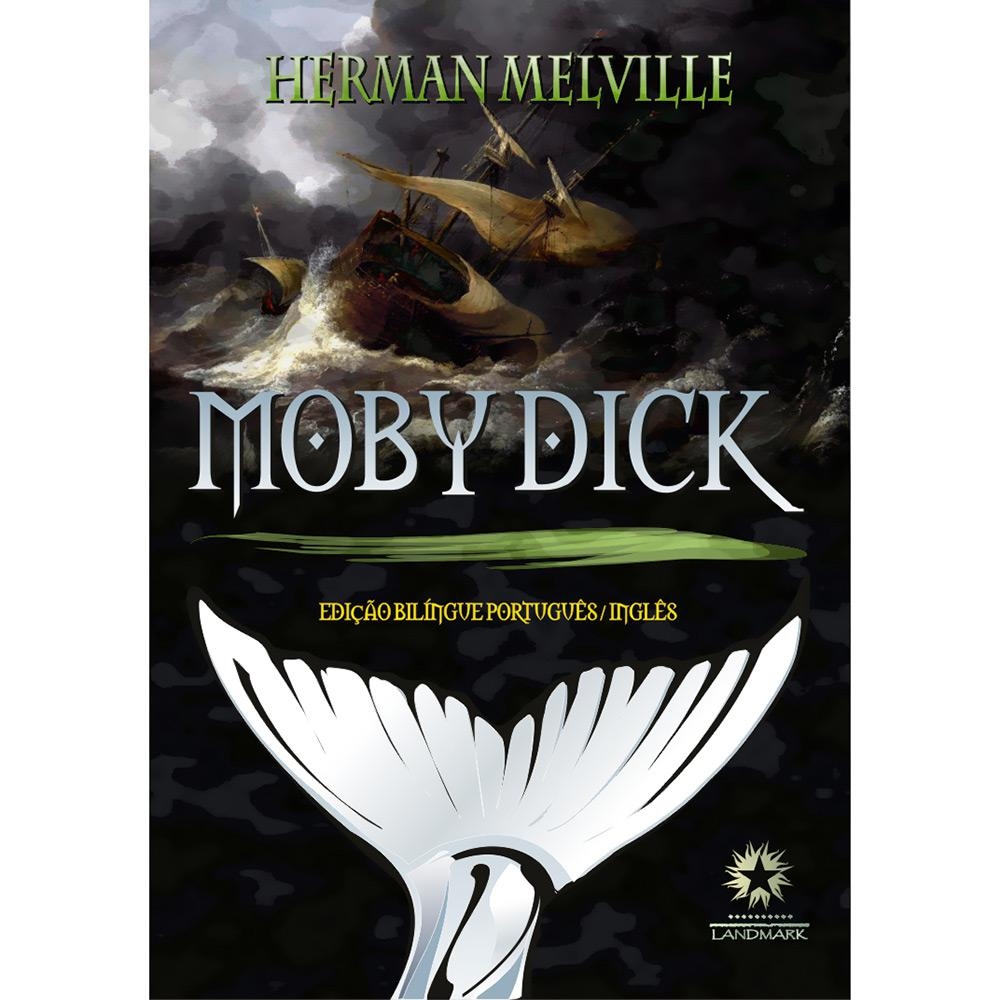
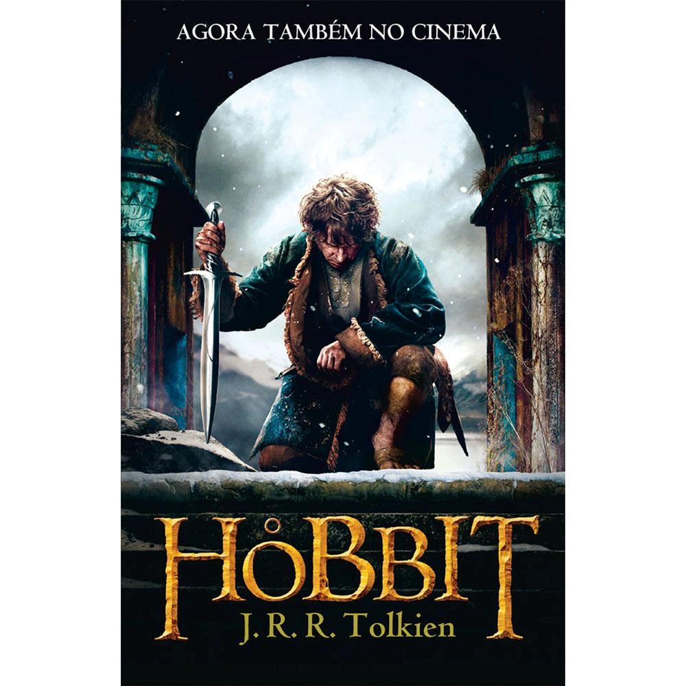

Sinopse
Hazel é uma paciente terminal. Ainda que, por um milagre da medicina, seu tumor tenha encolhido bastante — o que lhe dá a promessa de viver mais alguns anos —, o último capítulo de sua história foi escrito no momento do diagnóstico. Mas em todo bom enredo há uma reviravolta, e a de Hazel se chama Augustus Waters, um garoto bonito que certo dia aparece no Grupo de Apoio a Crianças com Câncer. Juntos, os dois vão preencher o pequeno infinito das páginas em branco de suas vidas.
Dados técnicos
Data de publicação: 13 de novembro de 2012
Editora: Intrínseca
Autor: John Green
Número de páginas: 288
clique aqui para ter acesso ao conteúdo
clique aqui para comprar livro

Sinopse
Na cidade de New Bedford, em Massachusetts, o marinheiro Ismael conhece o arpoador Queequeg e, juntos, partem para a ilha de Nantucket em busca de trabalho no mercado de caça às baleias. Lá, eles embarcaram no baleeiro Pequod para uma viagem de três anos aos mares do sul. Entre eles, tripulantes de diversas nacionalidades: os imediatos Starbuck, Stubb e Flask; os arpoadores Tashtego e Daggoo, além de Acab, o sombrio capitão que ostenta uma enorme cicatriz do rosto ao pescoço e uma perna artificial, feita do osso de cachalote. Obcecado por encontrar a fera responsável por seus ferimentos e que nenhum arpoador jamais conseguiu abater - a temível "Moby Dick" -, o capitão Acab conduz o baleeiro e toda a sua tripulação por uma rota de perigos e incertezas.
Dados técnicos
Data de publicação: 1 janeiro 2012
Editora: Landmark
Autor: Herman Melville
Número de páginas: 527
clique aqui para ter acesso ao conteúdo
clique aqui para comprar este livro

Sinopse
Os hobbits são seres muito pequenos, menores do que os anões. São de boa paz, sua única ambição é uma boa terra lavrada e só gostam de lidar com ferramentas manuais. Este livro tem como personagem central o hobbit Bilbo Bolseiro. Ele vive muito tranquilo até que o mago Gandalf e uma companhia de anões o levam numa expedição para resgatar um tesouro guardado por Smaug, um dragão enorme e perigoso.
Dados técnicos
Data de publicação: 1937
Editora: WMF Martins Fontes
Autor: J.R.R.Tolkien
Número de páginas: 328
clique aqui para ter acesso ao conteúdo
clique aqui para comprar este livro
Sinopse
A filha mais nova de Mackenzie Allen Philip foi raptada durante as férias em família e há evidências de que ela foi brutalmente assassinada e abandonada numa cabana. Quatro anos mais tarde, Mack recebe uma nota suspeita, aparentemente vinda de Deus, convidando-o para voltar áquele cabana para passar o fim de semana. Ignorando alertas de que poderia ser uma cilada, ele segue numa tarde de inverno e volta a cenário de seu pior pesadelo. O que encontra lá muda sua vida para sempre. Num mundo em que religião parece tornar-se irrelevante, 'A Cabana' invoca a pergunta: 'Se Deus é tão poderoso e tão cheio de amor, por que não faz nada para amenizar a dor e o sofrimento do mundo?' As respostas encontradas por Mack surpreenderão você e, provavelmente, o transformarão tanto quanto ele.
Dados técnicos
Data de publicação: 8 de agosto de 2008
Editora: Arqueiro
Autor: William P. Young
Número de páginas: 240
clique aqui para ter acesso ao conteúdo
clique aqui para comprar este livro
Copyright Wallace Borisbiuda (Frango com Batata doce e farinha de whey)